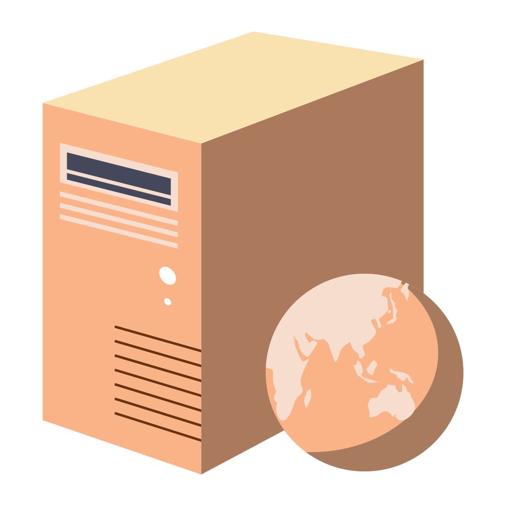
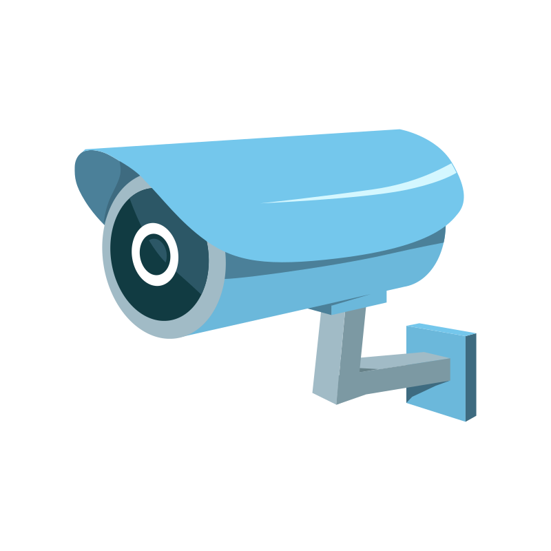

Boris Vassilev
Hello world! This is my portfolio site!
It is to be improved in the near future...
Projects
JGLUtil
A wrapper for OpenGL in Java made with LWJGL, featuring a GPU path tracer.


Paint
A program with basic drawing functionality, written in Java with WindowBuilder. This was a school project made in 8th grade.

YoghurtGL
A C++ gui-less game engine using ECS built with OpenGL. Features a PBR renderer and a GPU path tracer.
LL(1) grammar parser
A C++ library of tools for Pushdown Automata and Finite State Transducers. Implements a parser generator for LL(1) grammars.
CPU Path Tracer - Chaos Camp Project
A CPU path tracer with two-level acceleration structure, paired with a scene exporter from Blender. This project was part of the 2025 Chaos Camp

HTTP Server
A simple HTTP server written in C++ with multithreading support. Implements an interface similar to that of Node.js Express.
N-body simulation
A study of implementation of GPU N-body simulation. Uses YoghurtGL as a base and run on GPU

System Programming Project
A multithreaded task system in C++ with priorities aim for real-data-time-ness
Pacman
A simplified Pacman clone made using YoghurtGL.

Design Patterns in C++
University course project showcasing different design patterns in C++.
 THIS IS THE END
THIS IS THE END